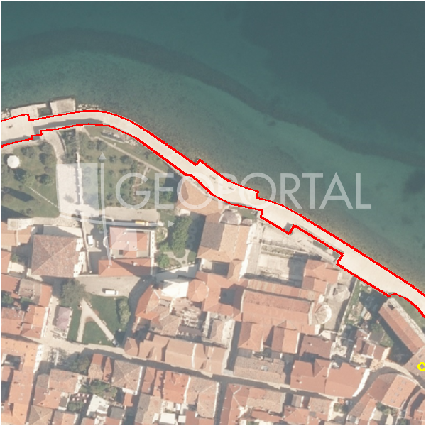

#38938 · ISTRA, POREČ - GRAĐEVINSKO ZEMLJIŠTE S POGLEDOM 7 KM OD MORA
Poreč, Poreč, Istarska · zemljiste · njuskalo · status active · oglas ↗
Ocjena
- Score
- 60 rule 60 · LLM – · 12.09.2026.
- RLV
- 1,79 M€ (673 €/m²) · ratio 3,60
- Ukupna investicija
- 5,44 M€
- GBP
- 1.919 m²
- Feedback
- –
- CRM
- –
Oglas
- Cijena
- 499.000 € (178 €/m²)
- Površina
- 2.800 m² · DKP 2.665 m² (odstupanje -4,8 %)
- Prodavatelj
- agencija · DAMMI Real Estate
- Prvi put
- 11.09.2026. · zadnje 11.09.2026. · 0 d na tržištu
Povijest cijene
| Datum | Cijena |
|---|---|
| 11.09.2026. | 499.000 € |
Flagovi
natura_uz_gradnju Natura/zaštićeno područje uz građevinsku zonu — posebni uvjeti (−5)zop_70_100 ZOP pojas 70/100 m (−10)
zone_uncertainty zona nije pregledana (reviewed: false) (−5)
parcelacija fazni projekt / parcelacija
llm_pending LLM ekstrakcija/ocjena nedostupna
Komponente score-a
| rlv | {'gbp': 1919.0376, 'kis': 0.8, 'nkp': 1439.2782000000002, 'noi': None, 'rlv': 1793674.3828695668, 'ratio': 3.5945378414219777, 'value': None, 'phases': 2, 'profile': 'obala_visestambeno', 'gdv_neto': 8059957.920000002, 'cost_soft': 383807.52, 'gdv_bruto': 10074947.400000002, 'kis_known': False, 'total_inv': 5441676.256000001, 'cost_build': 3838075.2, 'cost_other': 690853.5360000001, 'cost_sales': 302248.4220000001, 'demolition': False, 'gbp_source': 'kis', 'rlv_per_m2': 672.9652173913049, 'parcel_area': 2665.33, 'parcelation': True, 'roi_on_cost': 0.42561025923700246, 'profit_at_ask': 2316033.2420000015, 'cost_demolition': 0.0, 'total_inv_phase': 2985308.1280000005, 'parcel_area_effective': 2398.797, 'sale_price_per_m2_nkp': 7000.0} |
| hard | [] |
| info | ['parcelacija', 'llm_pending'] |
| rubric | {'permits': {'max': 5.0, 'detail': {'permit': 'none'}, 'points': 0.0}, 'location': {'max': 15.0, 'detail': {'source': 'rlv.yaml:istra_zapad/row1', 'sale_price_per_m2_nkp': 7000.0}, 'points': 15.0}, 'physical': {'max': 4.0, 'detail': {'slope_pct': 15.52, 'slope_points': 1.448, 'sea_row1_bonus': True}, 'points': 2.45}, 'liquidity': {'max': 3.0, 'detail': {'n_cuts': 0, 'points_cut': 0.0, 'points_days': 0.008333333333333333, 'seller_type': 'agencija', 'points_fresh': 0.5, 'price_cut_pct': None, 'days_on_market': 1, 'points_private': 0}, 'points': 0.51}, 'rlv_ratio': {'max': 25.0, 'detail': {'rlv': 1793674, 'ratio': 3.595, 'asking_price': 499000.0}, 'points': 25.0}, 'ticket_fit': {'max': 10.0, 'detail': {'asking_price': 499000.0}, 'points': 9.99}, 'zone_quality': {'max': 8.0, 'detail': {'reason': 'zona nepoznata', 'source': 'nepoznato', 'zone_class': None}, 'points': 2.0}, 'profit_potential': {'max': 20.0, 'detail': {'roi_on_cost': 0.426, 'profit_at_ask': 2316033}, 'points': 20.0}, 'price_vs_benchmark': {'max': 10.0, 'detail': {'source': 'auto:Poreč', 'deviation': -0.025, 'ask_eur_m2': 178, 'benchmark_eur_m2': 173.89}, 'points': 4.59}} |
| weights | {'llm': 0.4, 'rule': 0.6, 'model': 0.0} |
| penalties | {'zop_70_100': 10, 'zone_uncertainty': 5, 'natura_uz_gradnju': 5} |
| raw_score | 79,5 |
| rlv_notes | ['parcelacija: > 2500 m² → fazni projekt, −10 % površine, +5 % soft', 'fazni projekt: 2 faze; investicija prve faze 2,985,308 €'] |
| flag_notes | {'natura': True, 'phases': 2, 'max_gbp': 1919, 'zop_band': '70', 'total_inv': 5441676, 'zone_code': None, 'zone_class': None, 'zone_known': False, 'zone_source': 'nepoznato', 'zone_reviewed': None, 'protected_area': False, 'total_inv_phase': 2985308} |
| caps_applied | [] |
GIS
- Čestica
- k.o. 323748, k.č. 30/5 (pin_buffer, 0,78); k.o. 323748, k.č. 370 (pin_buffer, 0,70); k.o. 323748, k.č. 652 (pin_buffer, 0,68)
- Zona
- – (–)
- kig / kis / katnost
- – / – / –
- GP / UPU
- – · UPU –
- Pristup / nagib
- unknown · 15,5 % (max 32,7 %)
- More
- 0 m · red 1 · ZOP 70
- Zaštite
- Natura da · zaštićeno ne · kulturno dobro ne
- Zgrade na čestici
- 0 %
- Match
- 0,78
Karta
Ortofoto (DOF)

RLV kalkulacija — pretpostavke
| gbp | {'value': 1919.0376, 'source': 'kis'} |
| kis | {'value': 0.8, 'source': 'default_profila'} |
| sea_row | {'value': '1', 'source': 'gis'} |
| soft_pct | {'value': 0.1, 'source': 'profil+parcelacija'} |
| nkp_ratio | {'value': 0.75, 'source': 'profil'} |
| cost_other | {'value': 690853.5360000001, 'source': 'profil: doprinosi+uređenje po m² GBP, financiranje+rezerva % gradnje'} |
| parcel_area | {'value': 2665.33, 'source': 'dkp'} |
| asking_price | {'value': 499000.0, 'source': 'oglas'} |
| margin_on_cost | {'value': 0.15, 'source': 'profil'} |
| build_cost_per_m2_gbp | {'value': 2000.0, 'source': 'profil'} |
| sale_price_per_m2_nkp | {'value': 7000.0, 'source': 'rlv.yaml:istra_zapad/row1'} |
| transfer_tax_and_acquisition | {'value': 0.06, 'source': 'profil'} |
Ekstrakcija iz oglasa
| slope_mention | blagi nagib |
| sea_distance_m_claim | 7000.0 |
Benchmarks mikrolokacije
| Vrsta | Vrijednost | n | Od | Izvor |
|---|---|---|---|---|
| land_ask_eur_m2 | 174 | 302 | 11.09.2026. | auto |
| newbuild_sale_eur_m2_nkp | 3.695 | 8 | 11.09.2026. | auto |
Opis oglasa
Na prodaju atraktivno građevinsko zemljište površine 2.800 m2, smješteno na mirnoj i traženoj lokaciji, svega 7 km od Poreča i mora. Zemljište se nalazi na blagoj padini s jugozapadnom orijentacijom, što osigurava obilje prirodnog svjetla tijekom cijelog dana te pruža prekrasan pogled prema moru. Infrastruktura je u blizini, što značajno olakšava i ubrzava realizaciju budućeg projekta. Dodatna vrijednost ove nekretnine je mogućnost parcelacije na čak 3 zasebna građevinska zemljišta, čime se otvara niz investicijskih mogućnosti za buduće vlasnike ili investitore. Prema prostorno planskim mogućnostima, zemljište je pogodno za različite vrste gradnje: • obiteljskih kuća, • luksuznih vila za odmor s bazenom, • kuća u nizu, • višestambenih zgrada s do 5 stambenih jedinica. Nakon parcelacije, svaka parcela zadržava potencijal za gradnju navedenih vrsta objekata, što ovu nekretninu čini izuzetno atraktivnom investicijom. Zahvaljujući izvrsnoj lokaciji, blizini mora i turističkih sadržaja te fleksibilnim mogućnostima gradnje, ova nekretnina predstavlja odličnu priliku kako za privatnu investiciju, tako i za razvoj turističkog ili stambenog projekta. Za više informacija i dogovor oko razgledavanja, slobodno nas kontaktirajte. Ključne prednosti: Mogućnost parcelacije na 3 građevinska zemljišta Samo 7 km od Poreča i mora Pogled na more Jugozapadna orijentacija Infrastruktura u blizini Mogućnost gradnje više tipova objekata Idealno za investiciju ili turistički projekt Prodajni predstavnik: Gabriel Deak Mob: 099/209-3330 E-mail: gabriel@dammi-realestate.com https://dammi-realestate.com/hr/